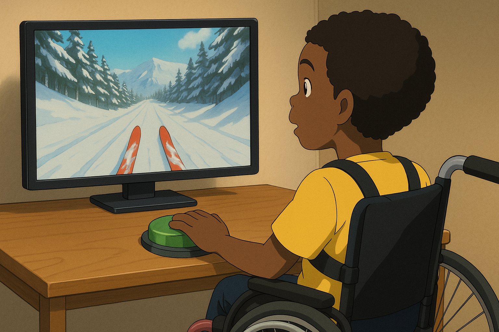

Activités et jeux
-
 LectureVisiter ↗
LectureVisiter ↗SENICT (Ian Bean)
-
MouvementVisiter ↗
Benny's Hub (Narbe Foundation)
- 
Pédagogie
-

-
GuidesVisiter ↗
CAST - UDL
-
 OutilsVisiter ↗
OutilsVisiter ↗Common Sense Education
Actualités et blogs
-
BlogVisiter ↗
Sam's EAT lab
-
 InspirationVisiter ↗
InspirationVisiter ↗One Switch